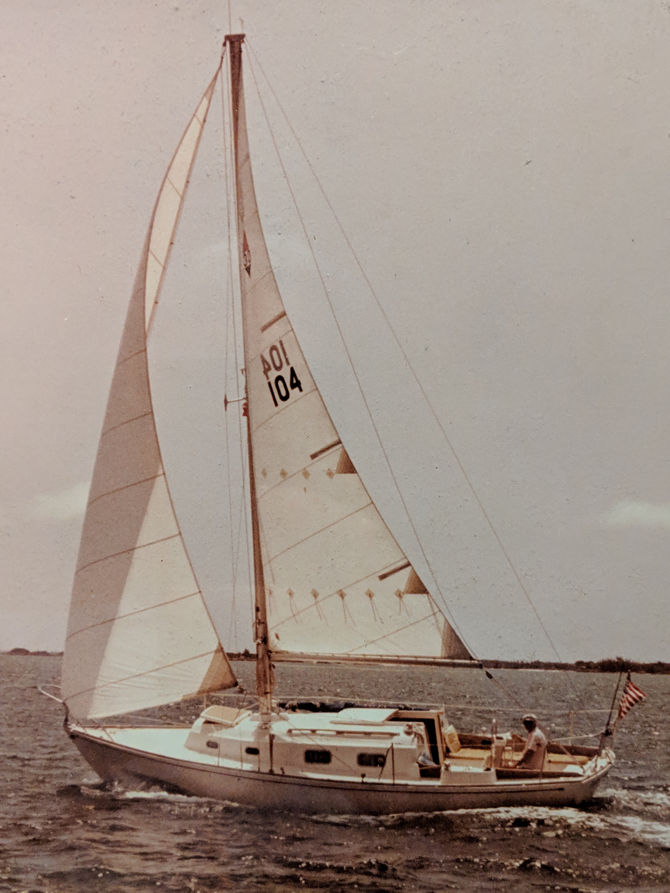
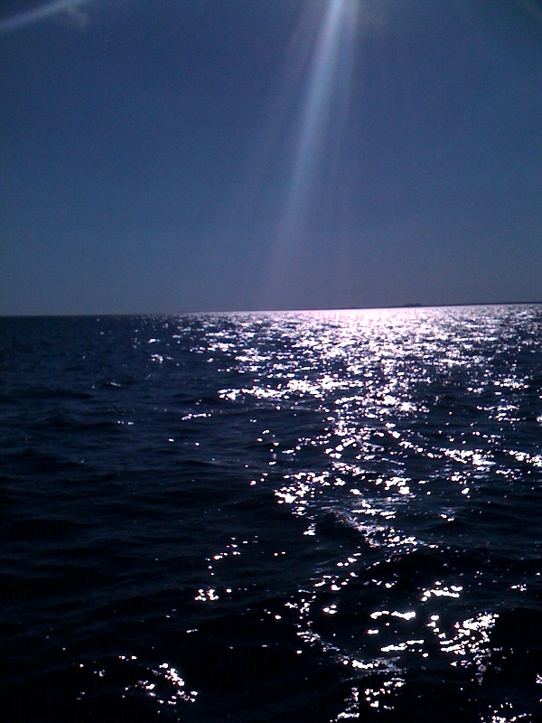

Moon Glow from the water

Moon Glow
when Bill Beavers
owned her
{kind=link}
I live in Miami, USA, where I work in the Department of Computer Science at the University of Miami. My main interest in Computer Science is Automated Theorem Proving. However, when I'm not proving theorems I tend to be somewhere in or on the ocean ...
I used to be crazy into SCUBA diving, but from about 2005 I developed a dominating interest in sailing. I started sailing as foredeck crew on Finesse, a Tartan 34, sail number 301, owned and skippered by Bill Beavers - see the picture on the right.
In March 2011 I bought my own boat, Moon Glow ...
{kind=link}
Moon Glow is a Bristol 30, sail number 104. It's moored at the Coconut Grove Sailing Club. My buddy Carol took a photo of us the first time we ever took Moon Glow out, and submitted it to the Latitudes and Attitudes seafaring magazine (now defunct), and we appeared in the August 2011 issue. Here's the photo. In 2013 Cruising World had a small article about Moon Glow in the October 2013 issue. Here it is.
{kind=link}
{kind=link}

Finesse's stern

Sunlight or moonlight?
{kind=link}

Moon Glow in the moon glow